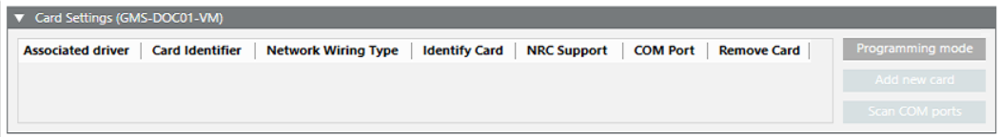
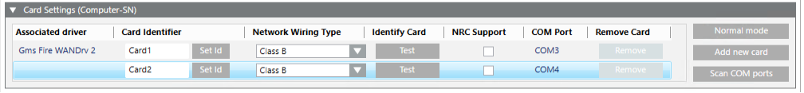

XNET Card for Fire WAN Configuration Reference
This section provides reference information about the XNET Card tab of the Fire WAN driver.
For configuration instructions, see Configure the Fire WAN Driver.
In the XNET Card tab, the Card Settings expander enables you to program the cards as required. The expander contains the list of cards/adapters, organized in a table with the following columns:
- Associated driver: The driver connected to the COM port.
- Card Identifier: The unique card ID. Max 8 letters or digits with no special characters.
- Set Id: The command to program the ID on the card. The command execution takes a few seconds.
NOTE: If a duplicated identifier exists in the list, for example if a card set in another computer is installed that has the same identifier as an existing card, then the Set Id command cannot identify the card properly and fails. In this case, you need to uninstall one of the conflicting cards, then change the identifier of the other card in the related driver, and finally reinstall and configure the additional card and driver. - Network Wiring Type: Class B or Class X.
- Identify Card - Test: The test command starts a LED blinking that lets you identify the XNET card on the PC hardware.
- NRC Support: This check box enables the support for the Network Ring Card (NRC).
- COM port: The associated serial port on the PC.
- Remove Card: The Remove command can delete the corresponding card entry.
- On the right-hand side of the expander:
- The Programming Mode/Normal Mode commands let you start/stop the card programming.
- The Add new card command appends a new card to the list for you to configure.
- The Scan COM ports command can populate the list automatically based on the installed hardware. You then need to complete the configuration.


Further Information